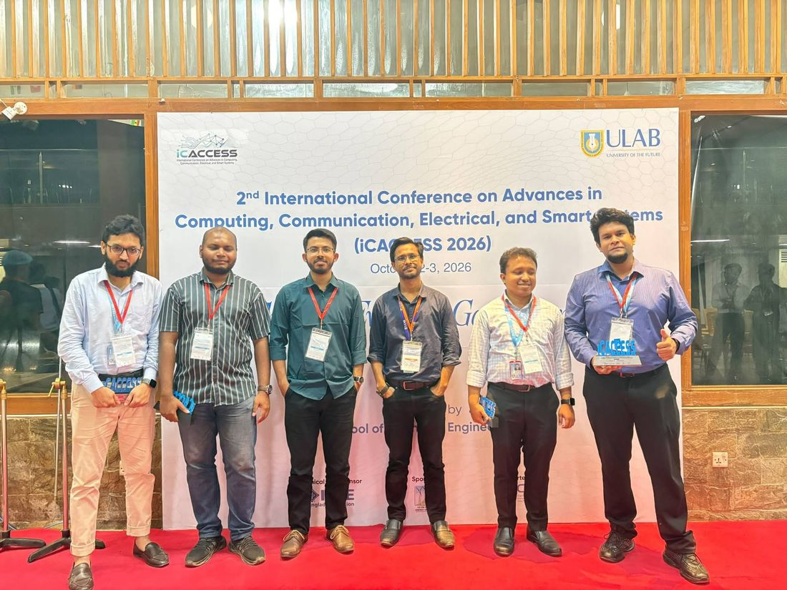
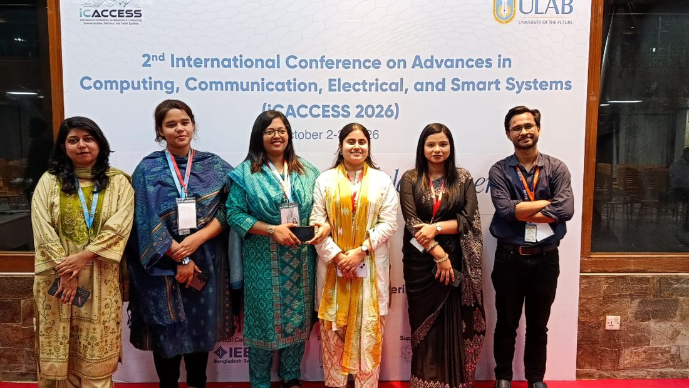
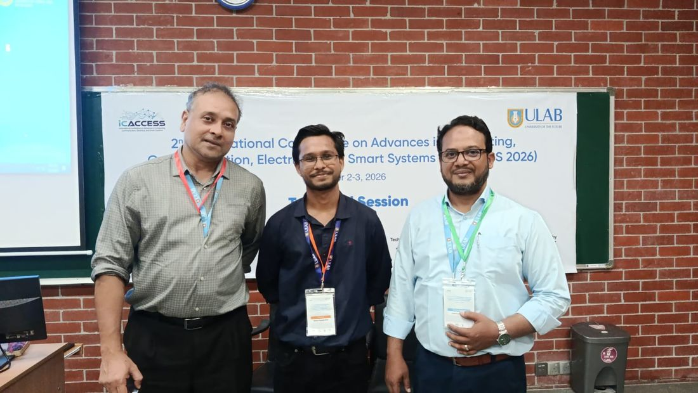
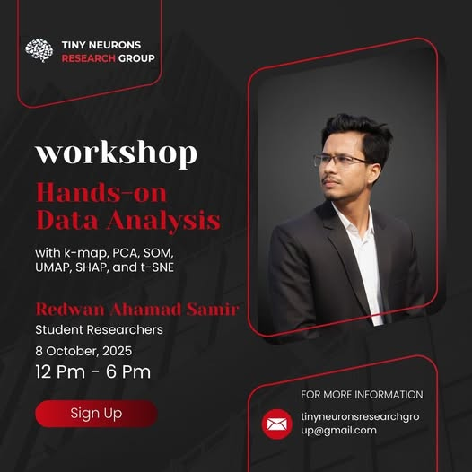
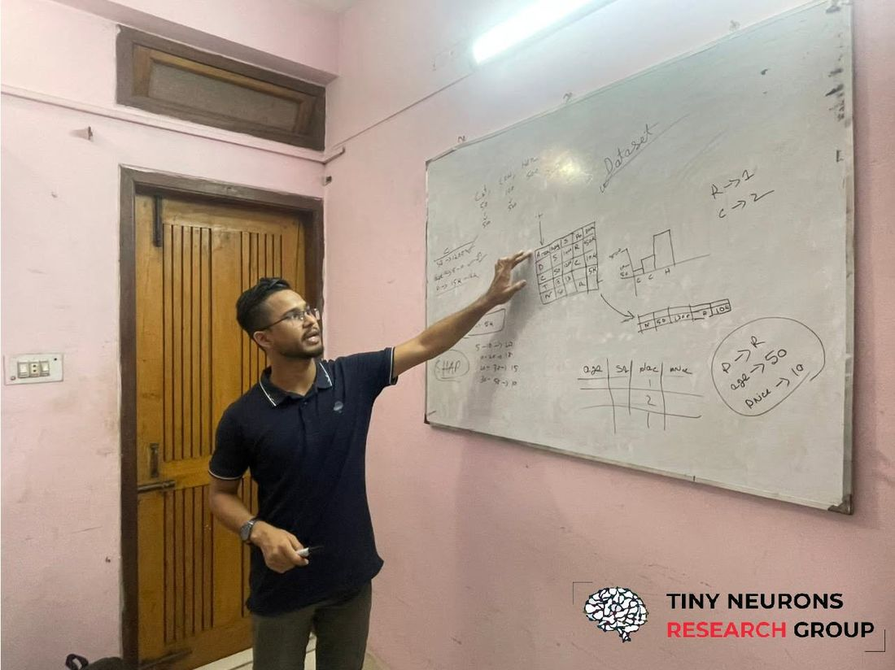

October 3, 2026
Conference
A personal milestone — attending my first research conference in person after getting
our paper, “AdaLLM: A Subject-Adaptive RAG Framework Designed for the Question Answering Process of NCTB’s Class-8 Science & BGS Subjects,” accepted at
the 2nd International Conference on Advances in Computing, Communication, Electrical,
and Smart Systems (iCACCESS 2026), held October 2-3, 2026. Sharing the stage with
faculty and fellow researchers, presenting work to a live audience, and the energy
of finally meeting the research community face to face.
October 3, 2026
Achievement
Received the Certificate of Appreciation for AdaLLM (Paper ID 358) at iCACCESS 2026,
presented at the University of Liberal Arts Bangladesh on October 2–3, 2026 —
a nice keepsake from the conference where the paper was presented alongside
co-authors Raihan Kibria, Samia Rahman, Md Omur Faruk, Raiyan Islam, and Md Kaviul Hossain.
September 22, 2026
Teaching
Officially joined the Department of Computer Science & Engineering, ULAB as a
Teaching Assistant for Fall 2026 — a new way to give back to the department while
sharpening my own understanding of the fundamentals by helping other students learn.
April 18, 2026
Achievement
Received the Certificate of Presentation for HornNet (Paper ID 4870) at the 2026 IEEE
2nd International Conference on Quantum Photonics, Artificial Intelligence and Networking
(QPAIN 2026), held April 16–18, 2026 at the IT Business Incubator, CUET, Chattogram
— with co-authors Fakir Mashuque Alamgir, Sayed Easin Arafat, Samia Rahman, and Abidur Rahman.
April 16, 2026
Achievement
The ULAB CSE Department hosted its Project Competition for Spring 2026 on April 16, 2026,
with around 38 teams showcasing innovative ideas and technical excellence. Our team,
"AI Talent Match" — with Bahadur Zamn Shezan and Samia Rahman — emerged as Champion.


October 8, 2025
Workshop
Kicked off our new Hands-On Workshop Series, built to grow our in-house team of students
and interns from fundamental concepts to advanced applications in data science and AI.
Workshop 1 covered hands-on data analysis with k-map, PCA, SOM, UMAP, SHAP, and t-SNE,
which I had the chance to instruct.
September 27, 2025
Achievement
Received the Certificate of Appreciation for Paper ID 156, “Early-Stage Coronary
Artery Disease Prediction Using Coronary Angiogram for Stenosis Detection in
Low-Resource Settings,” presented at the 3rd International Conference on Big
Data, IoT and Machine Learning (BIM 2025), held September 25–27, 2025 at Dhaka
International University — with co-authors Fazlay Rabby, Md. Musfiqur Rahman,
Rajdeep Das, Md. Hridoy Hossain, and Sazzad Hussain Farhaan.
September 27, 2025
Achievement
Received the Certificate of Appreciation for Paper ID 122, “Scalable sEMG-Based
User-Independent Deep Learning Framework for Assistive Wheelchair Control,”
presented at the 3rd International Conference on Big Data, IoT and Machine Learning
(BIM 2025), held September 25–27, 2025 at Dhaka International University —
with co-authors Fazlay Rabby, Rajdeep Das, Md. Musfiqur Rahman, and Md. Hridoy Hossain.
March 10, 2025
Large Language Models
An analysis of where current large language models fall short of general intelligence
and what research directions might bridge the gap. Exploring reasoning capabilities,
world modeling, and the role of embodiment in AI systems.
Read Article
February 28, 2025
Research
Lessons learned from publishing three papers as an undergraduate researcher.
Tips on finding collaborators, choosing venues, and navigating the review process.
Read Article
February 15, 2025
Computer Vision
Challenges and opportunities in deploying computer vision systems for healthcare
in developing regions. Technical and ethical considerations from our coronary
artery disease detection project.
Read Article
January 30, 2025
Deep Learning
Comparing LoRA, QLoRA, and other parameter-efficient fine-tuning approaches.
When to use each method and practical implementation tips for limited compute budgets.
Read Article
January 15, 2025
Signal Processing
Technical deep dive into processing surface electromyography signals for
wheelchair control. Filtering techniques, feature extraction, and model architectures.
Read Article
January 5, 2025
Audio AI
How we built HornNet to classify vehicles from horn sounds. Audio preprocessing,
spectrogram analysis, and the two-tier architecture for edge deployment.
Read Article